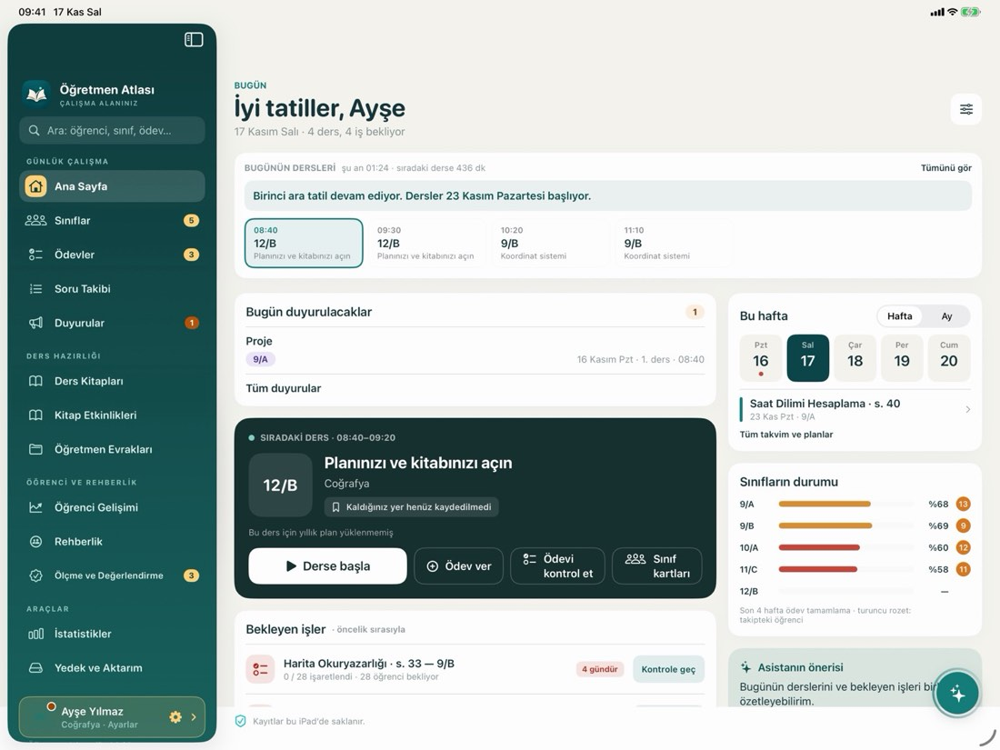
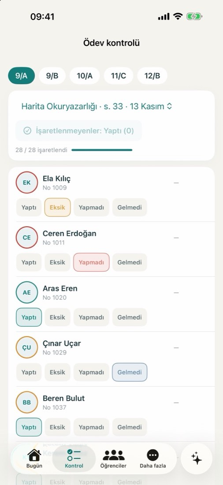
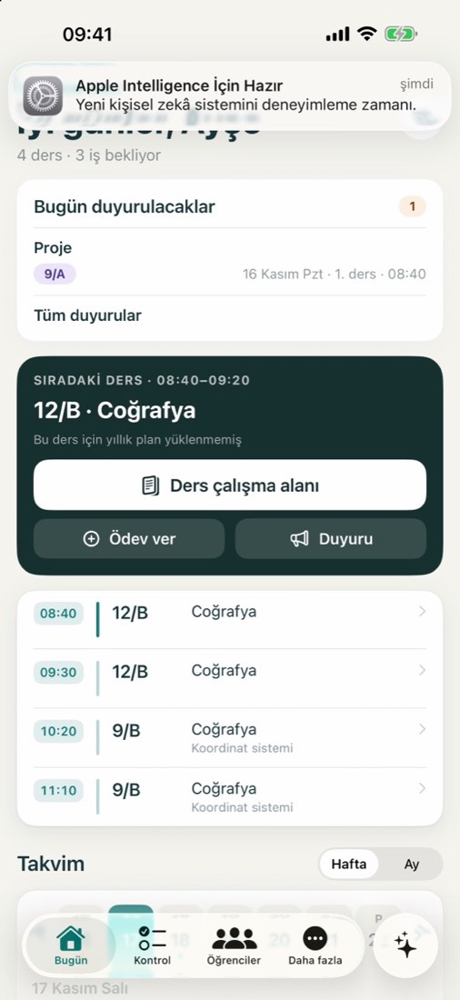
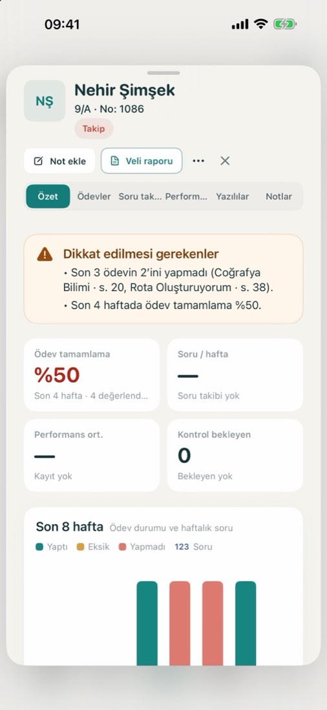
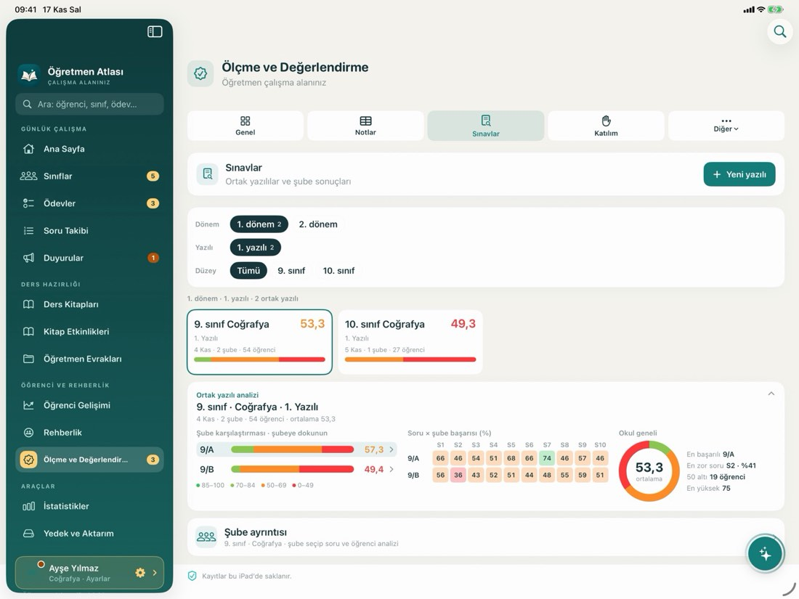

Öğretmen Atlası
Ders programı, ödev, yazılı, katılım ve rehberlik. iPhone ve iPad için.

Bugün
Ders programınızı PDF'ten ya da fotoğraftan okutun. Atlas günü sizin için sıraya koysun.



Ölçme ve değerlendirme
Şube şube analiz, soru bazında ısı haritası, sık yapılan hatalar ve telafi. Katılım ve performans notunu ölçekle verin.

"Bu sınıfa ödev ver", "yazılıda 50 altı kim?" Sorun, Atlas cevaplasın. Öğrenci adları yapay zekâya hiç gitmez.
Ödevini aksatanlar ve düşüşteki öğrenciler öne çıkar.
Ver, kontrol et, eksikleri tek listede gör.
Görüşme ve destek notları yalnız cihazınızda kalır.
Planlar, tutanaklar ve tatilleri atlayan nöbet çizelgesi.
Notlar, listeler ve kâğıtlar iPhone'unuzda ya da iPad'inizde kalır. Hesap gerekmez.
Yapay zekâya öğrenciler yalnız okul numarasıyla gider; rehberlik notları hiç gitmez.
İzleme yok, analiz yok. Yapay zekâ isteğe bağlıdır ve izninizi ister.
Uygulama şu an ücretsizdir. Yapay zekâ özelliklerinde günlük kullanım sınırı vardır.
Yalnızca iPhone'unuzda veya iPad'inizde. Düzenli yedek almanızı öneririz (Ayarlar › Yedekleme ve sürüm).
Hayır. Yapay zekâ isteğe bağlıdır, ilk kullanımda izninizi ister; öğrenciler yalnız numarayla anılır.
Kendiliğinden eşitlenmez. Bir cihazda yedek alıp diğerinde yükleyerek taşıyabilirsiniz.
Evet. Okul türünü "Ortaokul" seçince ders etkinliklerine katılım puanı ve katılım ölçeği kullanılır.
Kırmızı Kalem'de okunan yazılı, test ve deneme sonuçları tek dosyayla Atlas'a aktarılır.